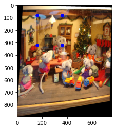

warped image 1

The goal of this part is to blend two images of the same scene togeter. we can
In this first part, we first pick correspondences by hand and then use those points to compute homography matrices. Since perspective transformation has 8 degrees of freedom, we need at least 4 correspondences to compute the homography matrix. Here are the input imager and the points I picked.
My input image size is 780x1000 and the points are
[[360, 70], [360, 306], [560 , 306], [560, 70]]
Using the matrices,
I performed forward warping on the input images. I first tried using inverse warping, but parts of the image are
always cut out and I will need to scale each edge by trial and error. I ended up using cv2.inpaint
with the mask shown below.
To create a mosaic, I first aligned the images by padding the images. Then blended the two images with alpha-blending.